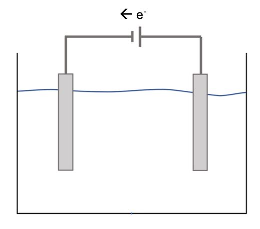

This exam covers Minerals to Metals, Immunology and Water Analysis.
Section A: Multiple choice (25 marks)
Minerals to Metals
Which of the following best explains why potassium is more reactive than sodium?
Which of the following best describes a property common to Group 1 metals?
When magnesium reacts with oxygen, the product is:
Which pair would you expect to show a displacement reaction?
Which of the following is not a typical property of metallic substances?
The "sea of electrons" model helps explain which property of metals?
Which statement correctly describes the structure of an alloy?
During the electrolysis of molten aluminium oxide (Al2O3), what happens at the cathode?
Which of the following correctly describes what happens at the anode during electrolysis?
Which of the following best defines oxidation in a redox reaction?
Immunology
A cellular pathogen would be
Which of the following best describes a pathogen?
Dengue fever is commonly found at low levels of infection in tropical areas of the world, such as Indonesia. This means that dengue fever is
Chemical control of pathogens includes disinfectants, antiseptics and antibiotics. Which of the following is correct?
Which statement about protozoan pathogens is true?
Which type of immunity involves antibodies passing from a mother to her baby during breastfeeding?
How do memory cells help protect the body from future infections?
AIDS is caused by the virus HIV. People with AIDS usually die from another infection, such as influenza, rather than from HIV itself. Why is this?
Water Analysis
An unknown salt forms a precipitate with sodium hydroxide solution and turns ink blue when treated with potassium ferricyanide. The cation is most likely:
Which salt forms when sulfuric acid reacts with sodium hydroxide?
What best describes an unsaturated solution?
Within a water molecule, the oxygen and hydrogen atoms are held together by:
Which of the following is best described as a weak acid?
A solution turned yellow with both methyl orange (red below 3.2, yellow above 4.4) and methyl red (red below 4.2, yellow above 6.3). Its pH is best described as:
Yellow in methyl orange means pH > 4.4, and yellow in methyl red means pH > 6.2. Both are true only when the pH is greater than about 6.2.
Acids react with several classes of compounds. Which classes will always produce carbon dioxide gas when they react with an acid?
Section B: Short answer (55 marks)
Minerals to Metals (20 marks)
A company is designing a new metal casing for smartphones. They want it to conduct heat away from the battery, resist denting and keep a shiny surface.
Explain, using the metallic bonding model, why metals are suitable for this purpose.
Metals have delocalised electrons that allow heat to be conducted (1 mark).
Strong metallic bonds between the positive ions and the delocalised electrons make metals resistant to denting and able to keep a shiny surface (1 mark).
The company wants the metal to be stronger and more durable than a pure metal. If they use an alloy, suggest two changes to the properties of the metal, and explain how each makes it more suitable for the casing.
- Increased strength/hardness: prevents denting and makes the casing more durable (1 mark).
- Improved corrosion resistance: keeps the casing shiny and long-lasting (1 mark).
Question 2 (3 marks)
The table shows some metals from Group 1 and Group 2.
| Metal | Group | Melting point (°C) |
|---|---|---|
| E | 1 | 28 |
| F | 1 | 180 |
| G | 2 | 650 |
| H | 2 | 850 |
Which Group 1 metal from the table is most reactive? Justify your answer.
Metal E: it has the lowest melting point, showing it is lower in Group 1, where the metals are more reactive.
A battery works by a metal donating electrons to produce an electric current safely at room temperature. Choose the most suitable metal from the table (E, F, G or H) for a battery, and explain your choice using the metal's chemical properties.
Metal F (1 mark). It is reactive enough (Group 1) to donate electrons readily and produce a current, but not so reactive that it reacts dangerously at room temperature (1 mark).
Question 3 (5 marks)
A company produces magnesium for lightweight alloys by electrolysis of molten magnesium chloride. A diagram of the electrolysis cell is shown; electrons flow to the left in the external wire.

Which way do the ions move in the electrolyte?
Mg2+ ions move to the ; Cl− ions move to the .
Electrons flow to the left electrode, making it negative (the cathode), so positive Mg2+ ions move towards it.
State at which electrode magnesium forms, and write the half-equation for this reaction.
Magnesium forms at the : Mg2+ + e− →
Explain why inert electrodes are used, and what would happen if reactive electrodes were used instead.
Inert electrodes do not react with the electrolyte or the products (1 mark).
Reactive electrodes would react with the chlorine or magnesium, contaminating the products or being used up (1 mark).
Question 4 (4 marks)
A student tests the reactivity of two metals, X and Y:
- A strip of metal X is placed in a solution of Y(NO3)2. A reaction occurs, and solid Y forms.
- A strip of metal Y is placed in a solution of X(NO3)2. No reaction is seen.
Which metal is more reactive? Metal
Explain your answer using the idea of electron transfer.
Metal X donates electrons to the Y2+ ions, forming solid Y: X loses electrons more easily than Y.
Later, the student coats copper onto zinc. When solid zinc is placed in a solution of Cu2+ ions: Zn(s) + CuSO4(aq) → ZnSO4(aq) + Cu(s)
Identify the reducing agent and the oxidising agent in this reaction.
Reducing agent:
Oxidising agent:
Question 5 (4 marks)
A student carefully adds a small strip of a reactive metal to water. The metal reacts vigorously, producing bubbles of gas, and the solution becomes strongly alkaline. When phenolphthalein is added, it turns pink.
Suggest two possible metals that could produce these observations.
Any reactive Group 1 or Group 2 metals, e.g. sodium, potassium, lithium, calcium.
Write a balanced chemical equation, with states, for the reaction of one of these metals with water.
For example: 2Na(s) + 2H2O(l) → 2NaOH(aq) + H2(g)
(Or Ca(s) + 2H2O(l) → Ca(OH)2(aq) + H2(g).)
Explain why the solution turns pink when phenolphthalein is added.
The reaction produces hydroxide ions (OH−), making the solution alkaline, and phenolphthalein turns pink in alkaline solutions.
Immunology (19 marks)
Question 6: Case study 1, Lyme disease (13 marks)
Lyme disease is caused by the bacterium Borrelia burgdorferi. It is transmitted to humans through a tick bite. There is no evidence that Lyme disease can spread from person to person. Ticks are small, 8-legged animals that cling onto your skin. They live on the ground and can climb 20 to 70 cm up grasses and bushes. When ticks find a host, they attach themselves and pierce the skin to take a blood meal. They may inject a small amount of saliva, which has anaesthetic (numbing) properties, so you don't notice the tick.
Is Lyme disease an infectious disease? Justify your answer.
Yes: it is caused by a pathogen (a bacterium), which is passed from an infected host to a new host by a tick.
Give two characteristics that define Borrelia burgdorferi as a bacterium.
Any two: unicellular; no nucleus; no membrane-bound organelles; has a cell wall; has circular DNA.
Give 2 tests that could be done on a sample of the bacteria to identify it as Borrelia burgdorferi.
Any two: Gram staining; plating to see the colour and shape of the colonies; looking at the cell shape under a microscope.
- What mode of transmission passes Borrelia burgdorferi to an uninfected person?
- Which part of the first line of defence fails when the tick passes on the bacteria?
The tick injects a small amount of saliva into the host's blood, which causes an inflammatory response. Outline what happens during an inflammatory response.
- Damaged cells release histamine (1 mark).
- Histamine makes blood vessels dilate and become more permeable (1 mark).
- More phagocytes are directed to the area, OR the extra blood causes swelling, pain and heat (1 mark).
What treatment could be given to a person with Lyme disease? Justify your answer.
Antibiotics (1 mark), because it is a bacterial infection, and antibiotics kill or inhibit the growth of bacteria (1 mark).
What advice could be given to a community to reduce the risk of catching Lyme disease?
Wear protective clothing (long sleeves and pants) or use insect repellent to protect against ticks, or any other suitable answer (e.g. check for ticks after walking in long grass).
Question 7: Case study 2, influenza (6 marks)
Influenza (the flu) is a highly contagious respiratory illness caused by influenza viruses. Symptoms appear suddenly and can include fever, cough, sore throat, runny nose, muscle aches, headache and fatigue. It is most often prevented by annual flu vaccination and can be managed with supportive care, though severe cases can lead to complications like pneumonia and even death.
What is a vaccine?
A substance containing weakened or inactive pathogens (or parts of them) that stimulates an immune response without causing illness.
What type of immunity does a vaccine provide? immunity
Governments advise everyone to have an annual flu vaccination so the community has herd immunity. What is herd immunity?
When a large proportion of the population is immune to a disease, its spread is reduced because there are fewer hosts, which protects the people who are not immune.
When the influenza virus enters the body, the third line of defence mounts a specific immune response. Outline the response of each type of lymphocyte: helper T cell, cytotoxic T cell and memory B cell.
- Helper T cell: detects the antigen and releases cytokines to activate B cells and cytotoxic T cells (1 mark).
- Cytotoxic T cell: destroys infected body cells by releasing chemicals that trigger cell death (1 mark).
- Memory B cell: remains in the body after the infection to give long-term immunity, allowing a faster response (1 mark).
Water Analysis (16 marks)
Complete the table. (Type formulas with ordinary numbers.)
| Name of chemical | Chemical formula |
|---|---|
| Zinc oxide | |
| Magnesium chloride | |
| Ammonium chloride | |
| Chromium(III) nitrate | |
| Calcium sulfide | |
| Potassium permanganate |
Question 9 (7 marks)
Hydrochloric acid (HCl) is produced in the stomach to help digest food. Sometimes excess acid causes discomfort or heartburn. Antacids are tablets containing basic substances, such as magnesium hydroxide (Mg(OH)2) or calcium carbonate (CaCO3), which neutralise the excess acid.
Write a balanced equation, with states, for the reaction between hydrochloric acid solution and magnesium hydroxide tablets.
HCl(aq) + Mg(OH)2(s) → + H2O
Explain, using the terms neutralisation and pH, how the antacid helps relieve heartburn.
The antacid is a base, which neutralises the acid (reacting to form a salt and water), raising the pH towards neutral.
Use the data booklet to decide whether each salt is soluble or insoluble.
| Compound | Soluble or insoluble? |
|---|---|
| Sodium carbonate | |
| Silver sulfate | |
| Ammonium hydroxide | |
| Rubidium carbonate |
Rubidium is a Group 1 metal like sodium and potassium, so its compounds are soluble.
Question 10 (3 marks)
The solubility of several salts is shown below.

Estimate the temperature at which sodium chloride (NaCl) and potassium nitrate (KNO3) have the same solubility.
If 40.0 g of potassium dichromate (K2Cr2O7) is dissolved in 50.0 mL of water at 90 °C, is the solution saturated, unsaturated or supersaturated?
40 g in 50 mL is 80 g per 100 mL, but only about 70 g dissolves per 100 g of water at 90 °C. (The original paper wrote the formula as K2Cr2O4.)
A 200.0 mL saturated solution of potassium dichromate cools from 90 °C to 50 °C. Estimate the mass of precipitate formed.
Per 100 mL: about 70 g at 90 °C and 30 g at 50 °C, so 40 g precipitates. For 200 mL: 2 × 40 = 80 g.
Question 11 (3 marks)
Two students tested an unknown salt to identify its cation and anion.
- They added the salt to sodium hydroxide solution but saw no change. The salt was soluble in water and gave a bright yellow-orange flame test. The cation is most likely:
- In the anion tests, they got no precipitate with silver nitrate or barium chloride solution. Name the unknown chemical:
- A solution of this chemical is neutral. Expected colour with methyl orange: ; with phenolphthalein: